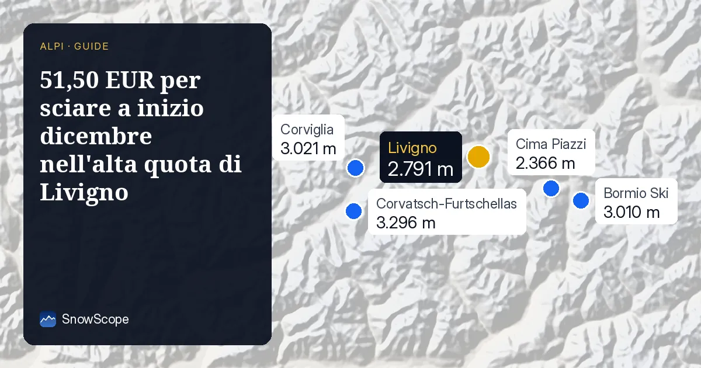
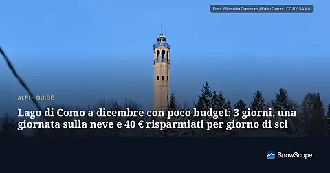

51,50 EUR per sciare a inizio dicembre nell'alta quota di Livigno
51,50 EUR è il prezzo giornaliero di uno skipass per adulti a Livigno durante il periodo promozionale di inizio dicembre. Questo prezzo basso dura fino al 18 dicembre 2026 ed è il modo migliore per sciare in questa alta valle italiana con un budget limitato. Puoi goderti 83 km di piste a un costo molto inferiore se visiti prima dell'arrivo della folla natalizia.
Le previsioni neve in tempo reale per Livigno nell'app SnowScopeAltezza neve, allerte powder e mappa 3D, gratis.
Prezzi bassi prima della corsa al Natale
Sciare a inizio stagione è un modo intelligente per risparmiare se sai dove andare. A Livigno, il sito ufficiale offre uno skipass giornaliero per adulti a 51,50 EUR durante il periodo promozionale dal 28 novembre al 18 dicembre 2026. È un ottimo affare per un'area sciistica mappata che conta 37 impianti di risalita e un dislivello di 979 m. Se rimani per una settimana intera, lo skipass per adulti di 6 giorni costa 258,50 EUR durante lo stesso periodo.
Il villaggio si trova a 1.811 m, che è piuttosto alto per le Alpi. Questa altezza aiuta a mantenere l'aria fredda e la neve secca anche a inizio inverno. Poiché l'impianto più basso parte a 1.811 m, non devi preoccuparti della pioggia a bassa quota tanto quanto in altre stazioni. Per uno sciatore frugale, queste tre settimane di dicembre offrono il miglior equilibrio tra un prezzo basso e l'accesso a una grande area montana.

Aspettative sulla neve a inizio dicembre
L'altezza della neve varia a seconda della parte della montagna in cui scii. In cima agli impianti a 2.791 m, la nostra storia della neve mostra che c'è 30 cm o più di neve nel 93 % degli inverni passati durante la prima settimana di dicembre. Entro la terza settimana, dal 15 al 21 dicembre, questa cifra raggiunge il 100 % degli inverni passati. Questo rende la cima della montagna una scommessa molto sicura per le curve di inizio stagione.
Anche la metà della montagna a 2.301 m ha buone probabilità per le prime settimane. Nella prima settimana di dicembre, c'è 30 cm o più di neve nel 57 % degli inverni passati. Questo migliora all'85 % degli inverni passati verso la metà del mese. Il 13 novembre 2026, l'altezza della neve attuale è di 1 cm alla base e 2 cm in cima. Le previsioni a due settimane suggeriscono che sta arrivando una quantità tra 12 cm e 26 cm di neve fresca sulle piste superiori.
La base della stazione a 1.811 m è spesso più sottile a inizio dicembre. In un dicembre abituale, l'altezza alla base è di 28 cm. Durante la prima settimana del mese, c'è 30 cm o più di neve solo nel 30 % degli inverni passati. Ecco perché è meglio concentrare lo sci sulle piste più alte dove l'area sciistica mappata raggiunge i 2.791 m. La neve di solito dura da fine ottobre in basso e da fine settembre in cima.
Come cambiano i prezzi a fine dicembre
Se aspetti più avanti nel mese, i prezzi salgono significativamente. Dal 19 al 25 dicembre 2026, lo skipass giornaliero per adulti aumenta a 66,00 EUR. Anche se le probabilità di neve alla base migliorano al 57 % per 30 cm o più nell'ultima settimana del mese, il costo extra potrebbe non valere la pena per un viaggiatore attento al budget.
I prezzi più alti iniziano il 26 dicembre 2026 per l'alta stagione. Uno skipass giornaliero per adulti costa allora 74,50 EUR. Per confronto, l'altezza abituale al 15 dicembre è di 81 cm in cima e 45 cm a metà montagna. Anche se la neve è più profonda, stai pagando molto di più per gli stessi 83 km di piste. Rimanere all'interno della finestra promozionale che termina il 18 dicembre è il modo migliore per mantenere bassi i tuoi costi.
Confronto tra Livigno e Pontedilegno-Tonale
È utile guardare altre opzioni come Pontedilegno-Tonale. Quella stazione ha una base molto più bassa a 1.120 m, il che significa che il fondo della montagna è spesso molto più sottile. In un dicembre abituale, la base a Pontedilegno-Tonale ha solo 17 cm di neve il 15 dicembre. Al contrario, Livigno ha 27 cm alla sua base nella stessa data. Livigno ha anche più piste, con 83 km rispetto ai 56 km di Pontedilegno-Tonale.
Tuttavia, Pontedilegno-Tonale ha una stazione superiore più alta a 2.993 m. Questa altezza le conferisce un'altezza abituale di dicembre di 101 cm in cima, che è più degli 85 cm di altezza abituale in cima a Livigno. Non abbiamo controllato i prezzi per Pontedilegno-Tonale sul sito ufficiale, quindi non possiamo confrontare i costi. Per uno sciatore concentrato sul prezzo più basso, l'offerta di 51,50 EUR a Livigno è una scelta solida e confermata.
Tendenze a lungo termine della neve nella valle
La nostra storia della neve di 46 inverni passati mostra che dicembre sta diventando effettivamente più nevoso a Livigno. A metà montagna, la media di dicembre era di 39 cm durante i primi 15 inverni tra il 1980-81 e il 1994-95. Negli ultimi 15 inverni tra il 2011-12 e il 2025-26, quella media è salita a 52 cm. Questo è un segno positivo per le persone a cui piace sciare a inizio stagione.
La cima degli impianti ha visto un aumento ancora maggiore. L'altezza media di dicembre è passata da 59 cm nei primi 15 inverni a 92 cm negli ultimi 15 inverni. Anche se l'inverno scorso è stato scarso con una media di dicembre di soli 12 cm alla base, la tendenza a lungo termine è forte. Il dicembre più sottile in cima è stato nel 2024-25 con 37 cm, che è ancora sufficiente per coprire le rocce sulle piste alte.
Consigli per sciatori
- Prenota il tuo skipass sul sito ufficiale prima del 18 dicembre per assicurarti il prezzo promozionale di 51,50 EUR.
- Punta alla settimana dal 15 al 21 dicembre per avere una probabilità del 100 % di trovare almeno 30 cm di neve in cima alla montagna.
- Concentra lo sci sulle piste sopra la metà montagna a 2.301 m dove la neve è più affidabile a inizio dicembre.
- Controlla il bollettino valanghe prima di sciare fuori pista, specialmente se la neve fresca raggiunge l'intervallo di previsione di 26 cm.
Altre mappe (siti esterni)
Riferimenti e crediti
- Livigno, official ski pass price list 2026-27 (PDF) www.livigno.eu/hubfs/tariffe_26-27.pdf
- SnowScope, December snow at three heights and today's snow map snowscope.app/
Su questi numeri
Numeri della neve: storico neve SnowScope, 46 inverni passati (1980-81 - 2025-26) a tre quote di ogni località (un modello del passato corretto per la quota: una stima per un'area, non misure della località); dati di dicembre calcolati dalle altezze giornaliere di quegli inverni. Neve attuale e tendenza a due settimane: previsioni SnowScope (tendenza da ECMWF e GFS, un intervallo, non una promessa). Impianti e piste: mappatura OpenSkiMap. Prezzi: le pagine ufficiali qui sotto, lette il 2026-11-13; i prezzi possono cambiare, verificare prima di prenotare.
Bollettini valanghe ufficiali: AINEVA – Associazione Interregionale Neve e Valanghe
Cita questo articolo
Per ricerca, didattica o stampa: numeri e grafici sono liberamente riutilizzabili con licenza CC BY 4.0 citando così.
SnowScope (2026), 51,50 EUR per sciare a inizio dicembre nell'alta quota di Livigno, https://snowscope.app/blog/it/2026/11/livigno-december-ski-promo-price-snow-odds-2026.html, consultato il 2026-11-14
SnowScope (Atlas Labs). (2026, November 14). 51,50 EUR per sciare a inizio dicembre nell'alta quota di Livigno. SnowScope snow reports. https://snowscope.app/blog/it/2026/11/livigno-december-ski-promo-price-snow-odds-2026.html
BibTeX
@misc{snowscope2026livignodecemberskipromop,
author = {{SnowScope (Atlas Labs)}},
title = {51,50 EUR per sciare a inizio dicembre nell'alta quota di Livigno},
year = {2026},
month = nov,
howpublished = {\url{https://snowscope.app/blog/it/2026/11/livigno-december-ski-promo-price-snow-odds-2026.html}},
note = {Published 2026-11-14 13:29 UTC; accessed 2026-11-14}
}· CC BY 4.0 · Metodi, dati e strumenti →
Livigno: neve e temperatura per quota, quest'inverno vs lo scorso (strumenti) →
Segui Livigno
Gratis: un messaggio quando arriva la neve e il meteo ogni mattina.
Altri bollettini neve

In 24 inverni su 46 le località del versante italiano e delle Alpi meridionali francesi hanno avuto un inverno relativamente più ricco del versante nord. Il grafico, le grandi annate e il tempo che le ha prodotte.

Un piano economico di 3 giorni sul Lago di Como a dicembre con i prezzi reali 2026-27: treni, battelli, funicolare e sci ai Piani di Bobbio o a Madesimo, quanto si risparmia rispetto a Cortina e le probabilità di neve a Natale.